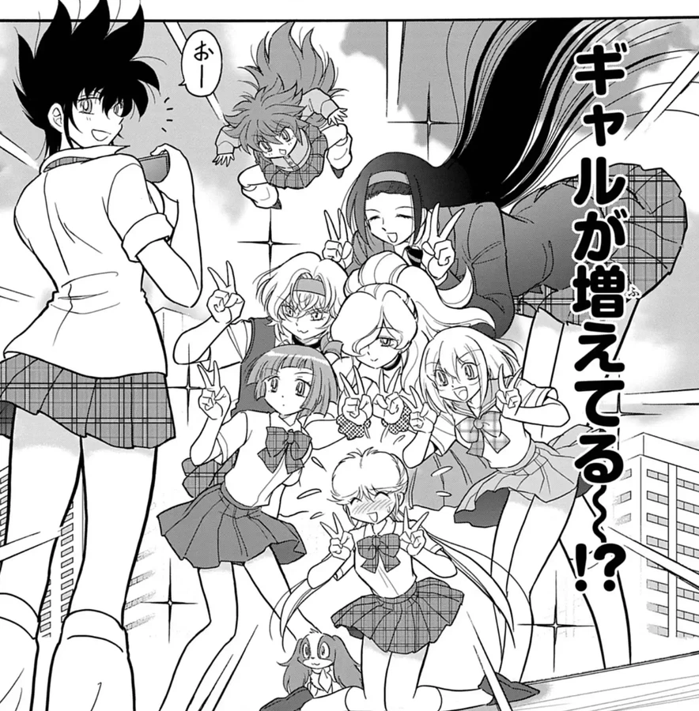
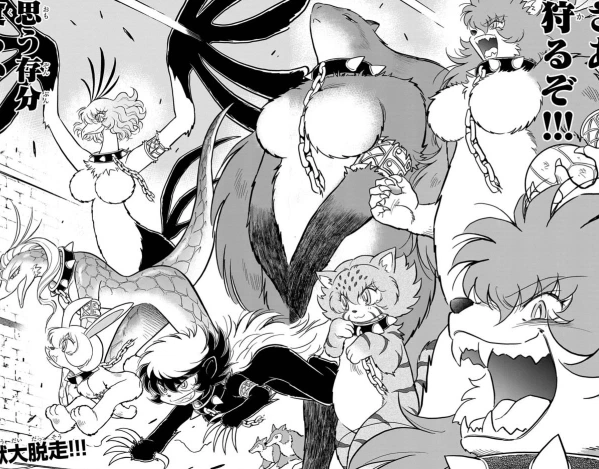
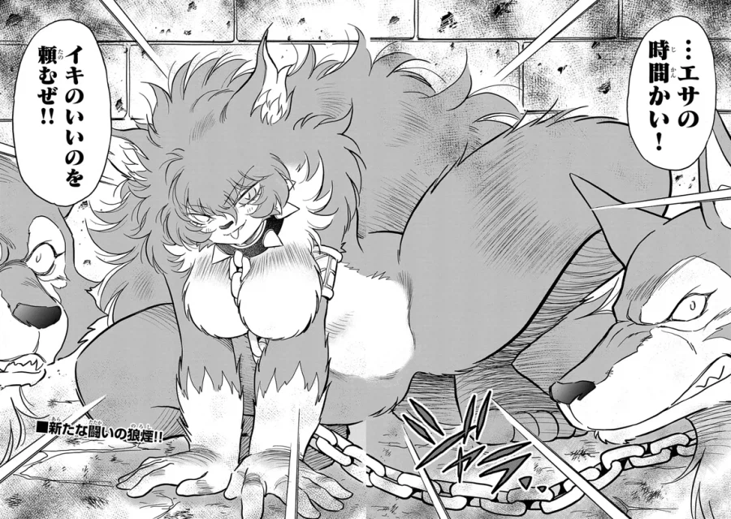
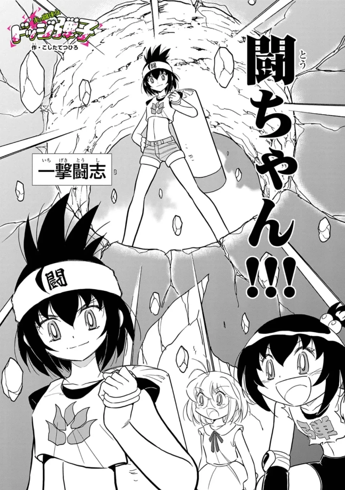

드라군


퍼리

인기없어서 출하당했던 통키아들 재등장

드라군


퍼리

인기없어서 출하당했던 통키아들 재등장
왜 언니처럼 그려놨지........
남자로 그리니까 출하 당했잖아
정확히는 성별불명. 단편 시절에는 1인칭 오레에 소년처럼 나와 사람들이 아들로 알았는데, 통순에서 저렇게 나와서
원래 여자였는데 단편 시절엔 소년처럼 입고 다니다가 성장해서 여성미가 드러난 건지, 저렇게 생겼어도 남자인 건지 모름.
슈뢰딩거의....
전략적 ts ㄷㄷㄷ
? 나의 통키는 이렇지 않아
한국 사람들이 오해하는 게 통순 오면서 분위기가 바뀐 게 아니라 원작 통키부터 저 감성이었다고 함.
통키 애니가 원작 저세상 개그와 섹드립 수위 대폭 낮추고 열혈물로 바꾼 거라고.
ㅈㄴ 마이너한 만화를 잘도 수입해왔네
옛날엔 값싼만화를 가져왔으니까
근육맨2세도 원래는 더 잔인하고 죽는 인물도 많고 팔다리모가지 쓱쓱 잘려나가는 만환데
애니에선 열혈물로 만들고 죽는 애들도
많이 살림 ㅋㅋ
할머니가 교복입고있넹
틀딱 작가 주제에 이 정도의 꼴림력을
피구만화에 퍼리는 대체 왜 나오노
작가 뭔가에 눈떠버려서 예전 설정은 통키 아들이었어도 지금은 딸이거나 오토코노코 일지도
왜 보추라고 안적어줌??
할머니 교복은좀...
아들은 시발 진짜 ㅋㅋㅋㅋㅋㅋ
아?들